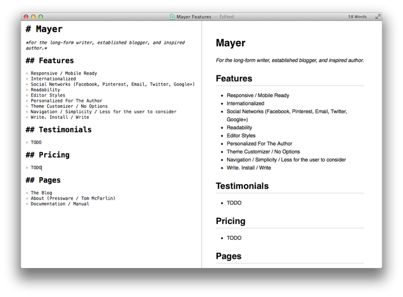
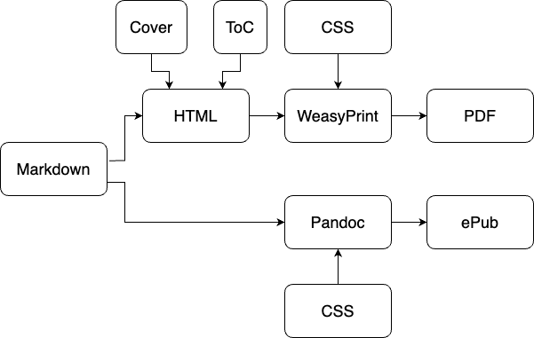

Simplifying documentation with Markdown and CI CD¶

Documentation is a recurring challenge in every company I have encountered. It is a complex topic: creating documentation is labor-intensive, but keeping it up to date is even more demanding. The result is often outdated or non-existent documentation.
For years, I have worked on improving documentation processes. My approach is to improve the tools so they become more efficient, and to add automation. In many cases, we can derive the documentation directly from the infrastructure, which minimizes manual data collection and lets people focus on analysis, commentary and summarization.
It may look like a small detail, but I believe a different approach to documentation can bring significant benefits to organizations.
What Makes Great Documentation?¶
Whatever platform a company uses, it should support all types of documentation: process, technical and compliance. Choosing the right tool requires considering the needs of all the teams. I recommend the following key features:
- Export to PDF.
- Support for macros, even complex ones.
- Integration with APIs.
- Metadata for each document: author, date, confidentiality level.
Why I Avoid Traditional Word Processors¶
The most commonly used tool to write documents is Microsoft Word. In some cases, I have also seen LibreOffice or Wiki-style collaborative systems.
Microsoft Word is undoubtedly powerful and offers countless features, but its complexity often means that these features are underused.
I avoid traditional word processors for several reasons:
- Incompatible with version control: their binary data structure does not work well with tools like Git.
- Layout mixed with content: formatting and content are intertwined, which complicates workflows.
- Inconsistent layouts: achieving uniform formatting can be unnecessarily time-consuming.
I find the combination of content creation and formatting inefficient. Authors should focus on writing, not on how their text looks, and save valuable time.
Not Everything Needs to Be Documented¶
Over-documentation often highlights deeper process issues. Organizations should consider these key points:
- Base skills: employees should have fundamental skills. Documentation is not a substitute for basic training.
- Documentation is not reporting: documentation should be concise and essential for the operations of the company, unlike extensive reports.
- Readability: hundreds of unreadable pages are a waste of time. Keep it simple and practical.
- Regular updates: allocate time to maintain and update the documentation.
- Standardization over customization: if every product requires unique documentation, consider standardizing the products instead of creating endless variations.
The Perfect Tool for My Documentation Workflow¶
If you read the previous section, you understand why my ideal tool is not Microsoft Word or similar platforms. My perfect tool lets me write in Markdown while integrating external content dynamically.
In a corporate setting, I have successfully adapted to XWiki in the past.
For my personal projects, which are our focus here, I rely on Markdown files stored in Git repositories. This setup lets me manage document revisions seamlessly. Recently, I have been using Obsidian, although the specific tool is not critical.
All the documentation I create for myself, whether for my website, books, notes or courses, is written in Markdown and saved on Git. This workflow lets me focus entirely on the content without being distracted by formatting.
Presentations and spreadsheets, of course, require a different approach.
Markdown: The Ideal Language for Simple and Effective Documentation¶
Markdown is a lightweight markup language created in 2004. It is designed to format documents, and its simplicity makes it very effective. We can easily convert Markdown files into HTML and style them with CSS.
One of the key advantages of Markdown is its readability: even in its raw form, it is structured in a way that is easy to read.

Markdown files are plain text, which means they work seamlessly with any text-searching tool and can be versioned easily with Git or similar systems.
One of the downsides of Markdown is the lack of an official standard. This can create confusion and, at times, compatibility issues between tools. Specifically:
- Inconsistent syntax: for example, headings can be defined with
#or=. - Limited feature support: some tools do not support all the Markdown features, such as tables.
- Proprietary extensions: certain tools introduce unique features that are not universally compatible.
Despite these drawbacks, Markdown remains my ideal tool for documentation. Here is why:
- Focus on content: it lets writers prioritize the message over the layout.
- Comprehensive formatting options: it supports essential elements such as headings, paragraphs, bullet and numbered lists, images, tables, bold, italic and underlined text, links, code blocks and quotes.
- Custom functionality: it can be extended to meet specific needs, which gives flexibility to diverse projects.
Whether we are building documentation, writing a book or organizing notes, Markdown lets us focus on what matters most: the content.
My Ideal Workflow for Publishing¶
After extensive testing, I developed an ideal workflow:

The same content generates both the printed book in PDF format and the electronic version in ePub format. After various tests, I decided to use Pandoc to generate the ePub version and WeasyPrint to generate the PDFs. The PDFs, styled differently, are used both to share digital documents and to create printed ones.
Both scripts are available in my GitHub repository, together with the style sheets and an example book in both ePub and PDF formats.
Electronic Version (ePub)¶
The process to generate the electronic version is very straightforward: Pandoc takes a template, converts the text directly from Markdown and applies the style sheets designed specifically for the ePub format. Pandoc also adds the cover and generates the table of contents (ToC).
The command I use to create an ePub from Markdown looks like this:
pandoc --from markdown-smart --to epub3 --toc --toc-depth=1 --css=css/fonts.css --css=css/common.css --css=css/epub.css --css=css/style.css --template=default.epub3 --epub-cover-image=cover.jpg --output book.epub --metadata-file=metadata.yml
I split the style sheets into multiple files, because some of them are also used to produce the printed version. The epub.css file contains all the styles specific to the electronic version.
The metadata file includes all the information embedded in the ePub file. In my case, it also includes specific details (like toc-title) that Pandoc needs to generate the ePub.
belongs-to-collection: Sample Books
creator:
- role: author
text: Andrea Dainese
description: null
rights: © 2024 Andrea Dainese
title:
- text: Sample Book
type: main
toc-title: Table of contents
The toc-title parameter, in particular, is not documented.
Pandoc comes with a set of templates to generate files in the most common formats, with default settings that work well in most cases. For ePub, the default template works perfectly as it is.
Printed Version (PDF)¶
The process to generate the printed version is more complex, because we must enrich the style manually with:
- Page numbers.
- Page breaks.
- Headers and footers.
- A table of contents (ToC).
So far, I have not found a way to generate a PDF with an acceptable style directly from Markdown. After various tests, I decided to use the WeasyPrint suite. Specifically:
- With the Markdown library, I convert the content into HTML.
- I create a single HTML file manually, adding the header, the footer, the ToC and the individual chapters converted previously.
- From Python, I use WeasyPrint to generate the PDF from the HTML file and apply the necessary style sheets.
weasyprint.HTML(f"{book_folder}.html").write_pdf(
f"../{book_folder}.pdf",
stylesheets=[
weasyprint.CSS(filename="../templates/common/css/fonts.css"),
weasyprint.CSS(filename="../templates/common/css/common.css"),
weasyprint.CSS(filename="../templates/book/css/paper_size.css"),
weasyprint.CSS(filename="../templates/book/css/style.css"),
],
font_config=font_config,
)
Compared to other libraries, WeasyPrint gave me satisfying results, even with very complex style sheets.
CI/CD¶
Once the publishing process is automated, we can integrate it into a CI/CD pipeline where every change or commit triggers a series of checks, followed by the publication.
In a business context, the pipeline could, for example:
- Require confirmation or validation from a third party.
- Notify the stakeholders of a new version of a document.
- Highlight the differences compared to the previous version automatically.
For my personal content, my pipeline includes:
- Checking the structure, integrity and compliance of the YAML files I use to describe each book.
- Checking the structure, integrity and compliance of the style sheets (CSS).
- Checking the structure, integrity and compliance of each Markdown file.
- Checking the spelling in each Markdown file.
These four steps are checked before every commit with pre-commit, and they are also verified server-side after the push, through the CI pipeline.
The script is available in the GitHub repository.